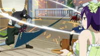

His head is that of a black panther's, but he has a tall, muscular build similar to that of a human's. Later, this body is called his battle form. He has a white muzzle, small red eyes, and a scar running down across his left eye. Like his fellow commanders (except Hughes), he wore a personal set of battle armor with a long cape draped around his body, as well as a helmet vaguely similar to that of Lyon Vastia. However, when he reached Earth Land, he took a form which is more typical for Exceeds, as a small, bipedal black cat with round ears. His facial features are retained, albeit in a very deformed manner. Although he can return to his former form, he can only do so for a very limited amount of time. His guild tattoo is on his back in the same place as Happy and Carla's, and is gray in color.
Panther Lily seems to have a grumpy disposition and detests noisy people. He first appears by demanding that Byro and the hyperactive Hughes quiet down (although Sugarboy noted that Panther Lily was in a nastier mood than usual). He also seemed to have reservations about Operation ETD, unlike the other commanders. This was presumably because he did not want his own race to be destroyed, despite the fact that he had also said that Extalia was a fake country, one he discarded a long time ago. However, Panther Lily is on good terms with Mystogan as he saved the young prince from death when he was a small child. Panther Lily does not discriminate against Exceeds or humans and treats them as equals, unlike the Exceeds in Edolas who viewed themselves as superior to the humans. Panther Lily likes kiwi fruits, even singing their praises. Despite his tough attitude, he is frightened of thunder.He also seems to have a penchant for oversized weapons, as shown from his handling of the Bustermarm and his liking for the Musica Sword.
Panther Lily was once an Exceed that lived in Extalia and worked for Extalia's army. One day he saved the Prince of Edolas from certain danger. However, his act of bringing the young prince to Extalia was considered as an act of treason by the elders, who labelled Panther Lily as a 'Fallen', a traitor, and exiled him from Extalia immediately and permanently. After these events, Panther Lily went to live in the human world with Mystogan. He trained himself and joined the Royal Army of Edolas as the Royal Captain of the 1st Magic War Division.
Aera (Ēra): Panther Lily, like every other Exceed, is capable of sprouting feathery wings that grant him the ability to fly, at the same time neutralizing the weight of one possible passenger carried by him. In his original, massive form, these wings are much larger than those of normal-sized Exceeds. Aera greatly helps Panther Lily out in battle, allowing him to remain out of reach of his enemies while he wields one of his large weapons to strike at them, or to rapidly dodge their ranged attacks, granting him added maneuverability and speed
Battle Mode Shift (戦闘モードシフト Sentō Mōdo Shifuto): While in Edolas, he was known for his huge size and mass, especially large when compared to a stereotypical Exceed. After being transported to Earth Land, Panther Lily has undergone major changes: his body has been drastically reduced in size, with him now being the same height as most of his fellow Exceeds. This is, according to his own words, because Earth Land "doesn't fit well with his previous body".However, true to his role as a physical fighter, Panther Lily has developed the ability to temporarily transform back to his usual large size, regaining his original strength, stamina and power. This proves to be rather difficult, as he can only maintain his large size for a short period of time.